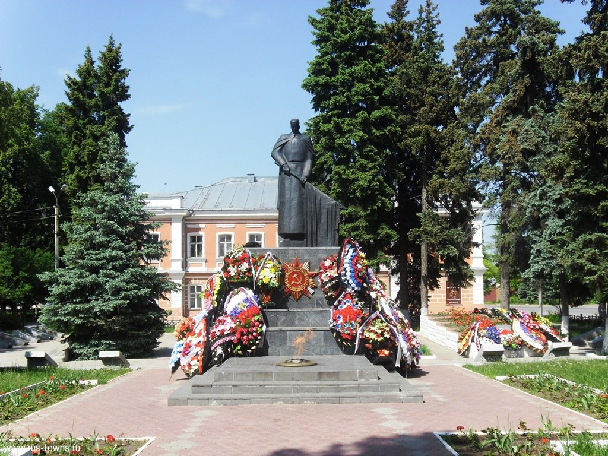
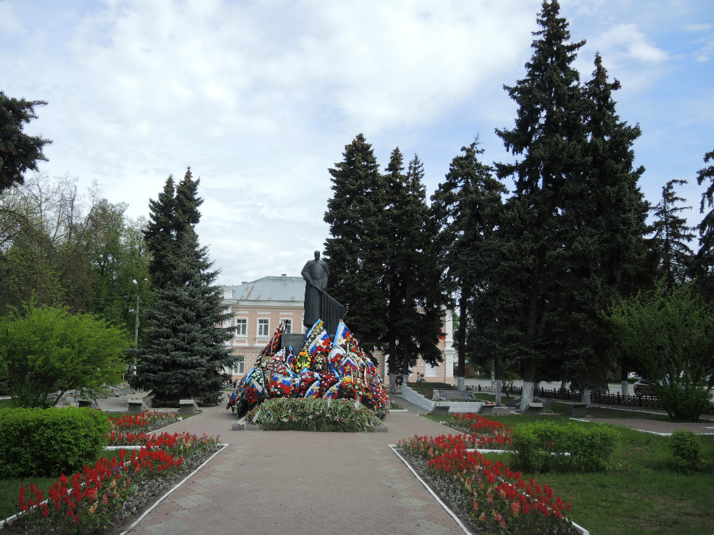

Места нашей области, посвящённые Великой Победе
 Домой
Домой
Мемориальный комплекс на площади Революции (Елец)
Мемориальный комплекс участникам революции и гражданской войны, советских воинов и партизан, погибших при освобождении города от фашистских захватчиков в декабре 1941 г. расположен в городе Ельце на площади Революции (на пересечении улиц Коммунаров и Комсомольской).
Изображения:
 